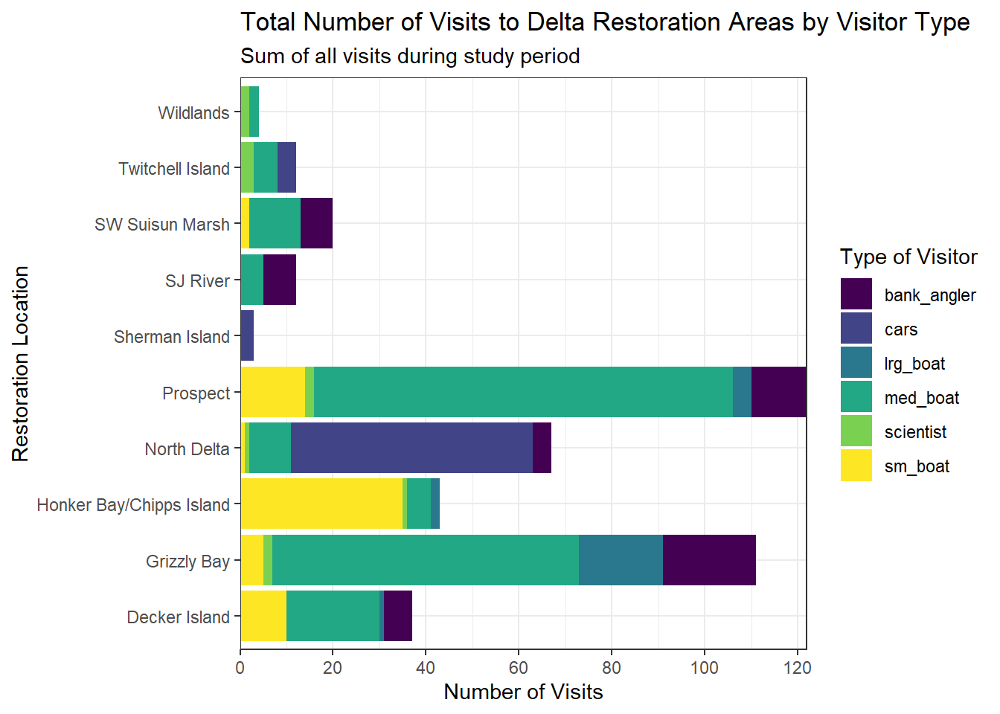

# Loading packages needed
library(readr) # to read data
library(dplyr) # to wrangle data
library(tidyr) # to also wrangle data
library(forcats) # makes working with factors easier
library(ggplot2) # for plotting
library(leaflet) # interactive maps
library(DT) # interactive tables
library(scales) # scale functions for visualization
library(janitor) # expedite cleaning and exploring data
library(viridis) # colorblind friendly color palette
# there were some packages that were not installed, so I installed them as the error messages showed up directly in the console as the error messages came upa05
Introduction
This document, a05, will explore using ggplot2 as well as leaflet to plot data and maps. The added bonus is that there is also additional data wrangling practice built in. For this assignment, the data being explored comes from the Sacramento-San Joaquin Delta Socioecological Monitoring. The data was accessed on March 19, 2026 from the EDI repository at this browser address https://portal.edirepository.org/nis/mapbrowse?packageid=edi.587.1.
Analyzing this data can be informative for understanding human visiting patterns when visiting the different areas of these deltas. For example, bigger areas within the delta may see more visitors, indicating that people may like to have more space for fishing or boating. Inferences regarding this can be drawn by analyzing the types of boats people tend to bring to each delta, and there may be correlation between visitors, size of boat, and the time of day people come. Another reason to analzye this data is to draw inferences regarding how human traffic may be impacting the different areas within the delta. For example, areas with a higher amount of visitors may be more polluted, or may have lower fish species diversity.
Therefore, there are both human-motivated reasons as well as environmental reasons more broadly for examining this dataset.
Set-up
Packages needed
Load the data
The data comes from the Sacramento-San Joaquin Delta Socioecological Monitoring
# load the data using here::here after manually downloading data and adding it to directory
delta_visits_raw <- read.csv(here::here("data/raw/Socioecological_monitoring_data.csv"))Data exploration and cleanup
# check out column names
colnames(delta_visits_raw) [1] "EcoRestore_approximate_location" "Reach"
[3] "Latitude" "Longitude"
[5] "Date" "Time_of_Day"
[7] "sm_boat" "med_boat"
[9] "lrg_boat" "bank_angler"
[11] "scientist" "cars"
[13] "notes" # peek at each column and class
glimpse(delta_visits_raw)Rows: 55
Columns: 13
$ EcoRestore_approximate_location <chr> "Decker Island", "Decker Island", "Dec…
$ Reach <chr> "Brannan to Decker Island", "Decker Is…
$ Latitude <dbl> 38.10587, 38.10587, 38.08456, 38.08456…
$ Longitude <dbl> -121.7064, -121.7064, -121.7204, -121.…
$ Date <chr> "2017-07-07", "2017-07-07", "2017-07-0…
$ Time_of_Day <chr> "unknown", "unknown", "unknown", "unkn…
$ sm_boat <int> 0, 0, 0, 0, 2, 0, 0, 7, 1, 0, 0, 0, 0,…
$ med_boat <int> 2, 4, 0, 1, 10, 0, 0, 1, 2, 0, 1, 6, 1…
$ lrg_boat <int> 0, 0, 0, 0, 1, 0, 0, 0, 0, 0, 0, 0, 0,…
$ bank_angler <int> 1, 3, 0, 0, 0, 0, 0, 0, 2, 0, 0, 5, 0,…
$ scientist <int> 0, 0, 0, 0, 0, 0, 0, 0, 0, 0, 0, 0, 0,…
$ cars <int> 0, 0, 0, 0, 0, 0, 0, 0, 0, 0, 0, 0, 0,…
$ notes <chr> "no notes", "no notes", "Nobody or tra…# from when to when?
range(delta_visits_raw$Date)[1] "2017-07-07" "2018-03-13"# Which time of day?
unique(delta_visits_raw$Time_of_Day)[1] "unknown" "morning"Notice that the names of the columns are not all in the same format, with some being mixed case, others snake_case. This needs to be fixed.
# using janitor to transform column names to same format
delta_visits <- delta_visits_raw %>%
janitor::clean_names()
# check out the cleaned up column names -> should be in snake_case
colnames(delta_visits) [1] "eco_restore_approximate_location" "reach"
[3] "latitude" "longitude"
[5] "date" "time_of_day"
[7] "sm_boat" "med_boat"
[9] "lrg_boat" "bank_angler"
[11] "scientist" "cars"
[13] "notes" Getting the data ready for ggplot
# transform the data into long format using pivot_longer to be more ggplot2 compatible
visits_long <- delta_visits %>% # creating new dataframe from cleaned up dataframe
pivot_longer(cols = c(sm_boat, med_boat, lrg_boat, bank_angler, scientist, cars), names_to = "visitor_type", values_to = "quantity") %>% # indicating the names of the columns for R by using cols =
rename(restore_loc = eco_restore_approximate_location) %>% # changing eco_restore_approximate_location to restore_loc for easier typing later on
select(-notes) # excluding the notes column from the new visits_long dataset
# Checking the outcome
head(visits_long)# A tibble: 6 × 8
restore_loc reach latitude longitude date time_of_day visitor_type quantity
<chr> <chr> <dbl> <dbl> <chr> <chr> <chr> <int>
1 Decker Island Bran… 38.1 -122. 2017… unknown sm_boat 0
2 Decker Island Bran… 38.1 -122. 2017… unknown med_boat 2
3 Decker Island Bran… 38.1 -122. 2017… unknown lrg_boat 0
4 Decker Island Bran… 38.1 -122. 2017… unknown bank_angler 1
5 Decker Island Bran… 38.1 -122. 2017… unknown scientist 0
6 Decker Island Bran… 38.1 -122. 2017… unknown cars 0# calculate vistis by restore_loc , date, and visitor_type
daily_visits_loc <- visits_long %>%
group_by(restore_loc, date, visitor_type) %>% # grouping by restoration location, date, and visitor type for subsequent summary
summarise(daily_visits = sum(quantity)) # calculates the values in the quantity column based on above groupings
head(daily_visits_loc) # to view the new dataframe# A tibble: 6 × 4
# Groups: restore_loc, date [1]
restore_loc date visitor_type daily_visits
<chr> <chr> <chr> <int>
1 Decker Island 2017-07-07 bank_angler 4
2 Decker Island 2017-07-07 cars 0
3 Decker Island 2017-07-07 lrg_boat 0
4 Decker Island 2017-07-07 med_boat 6
5 Decker Island 2017-07-07 scientist 0
6 Decker Island 2017-07-07 sm_boat 0Analysis
In this section, I will plot the visitor data by type at each restoration location using my favorite plotting strategy from the plotting practice done in class and in the course textbook. I will also plot my favorite type of map. The one I liked the most was colorful and had the x axis start at 0.
ggplot(data = daily_visits_loc,
aes(y = restore_loc, x = daily_visits, fill = visitor_type)) + # fill is inside aes, mapped to variable visitor_type, that way each visitor type will show up as a variable in the legend and have its own color
geom_col() + # makes a bar graph
scale_fill_viridis_d() + # setting color of the bars
labs(x = "Number of Visits", # x-axis label
y = "Restoration Location", # y-axis label
fill = "Type of Visitor", # setting name of legend
title = "Total Number of Visits to Delta Restoration Areas by Visitor Type", # setting title of plot
subtitle = "Sum of all visits during study period") + # subtitle under title
scale_x_continuous(breaks = seq(0,120,20), expand = c(0,0)) + # start, end, increment of tick marks on x-axis. expand makes the bars start at zero without whitespace between the axis label
theme_bw() # set color theme of graph
# use ggsave to save plots
ggsave("C:/Users/musmu/OneDrive/Documents/training_noorabu/import-template-noorabu-prog/data/processed/figures/visit_restore_site_delta_a05.jpg", width = 12, height = 6, units = "in")Tables with dt - prep for mapping
# filter for unique locations using distinct function
locations <- visits_long %>%
distinct(restore_loc, .keep_all = TRUE) %>% # .keep_all=TRUE to keep the columns in the new datadrame
select(restore_loc, latitude, longitude) # picking which columns to keep in the data frame
head(locations)# A tibble: 6 × 3
restore_loc latitude longitude
<chr> <dbl> <dbl>
1 Decker Island 38.1 -122.
2 SW Suisun Marsh 38.2 -122.
3 Grizzly Bay 38.1 -122.
4 Prospect 38.2 -122.
5 SJ River 38.1 -122.
6 Wildlands 38.3 -122.# view the table in an interactive way using datatable
datatable(locations)Maps with leaflet
The following map is my favorite one from the plotting practice assignment done from the textbook.
# using leaflet to make an interactive map
leaflet(locations) %>% # mapping based on the locations dataframe from above
addProviderTiles(providers$Esri.WorldImagery) %>% # had to look this up - this provides a satellite background image from Esri
addProviderTiles(providers$CartoDB.PositronOnlyLabels) %>% # had to look this up - this adds labels on top of the satellite images
addCircleMarkers( # this adds circles according to the longitude and latitude
lng = ~ longitude,
lat = ~ latitude,
popup = ~ restore_loc, # had to look this up - creates a popup of the restoration location
radius = 5, # indicates the radius of the circles
# set fill properties
fillColor = "salmon", # sets color of circles
fillOpacity = 1, # had to look this up - makes circle not see through
# set stroke properties
stroke = TRUE, # draws a border around circle
weight = 0.5, # set thickness of border around circle
color = "white", # set color of border of circle
opacity = 1) # makes the border solid and not see throughDiscussion
The plot “Total Number of Visits to Delta Restoration Areas by Visitor Type” graphs the different observed types of visitors, from small, medium and large boats, scientists, cars and bank anglers at each of the 10 delta restoration locations. The map above pinpoints the location of each of the restoration locations. Looking at the plot and map simultaneously can lead to interesting observations. For instance, Grizzly Bay and Prospect appear to have the most medium boat and large boat visitors. Looking at the Grizzly Bay location on the map, it appears to be in a bigger area - being in a bay. There appears to be a lot of space for where visitors may be able to visit. However, I do not quite understand why there are a lot of medium and large boat visitors at the Prospect location. It appears to be more north and in a narrow part of a river. It makes me wonder how wide that stretch of river is. Based on the map, it just appears to be mostly fields around Prospect, so perhaps people may come out to boat in that area since it may be more removed from people.
Another interesting location to look at is Sherman Island, as only cars are the observed visitors - no boats and no scientists. Based on the map, Sherman Island does not really appear to be a real island; rather it is a little island or away from the shores of the delta, which would explain why no boats visited Sherman Island. You cannot boat where there is no water! It may be a popular driving trail, or perhaps it has a nice view visible from a car that people may like to park near and observe the delta. A final restoration site I want to point out is Honker Bay/Chipps Island which had the most small boats as visitors compared to the other locations. It is located in the middle of the Sacramento River, not too far from Decker Island. It is interesting that less small boats than large boats visited Decker Island, since it appears closer to the shore than Honker Bay/Chipps Island. What is as expected, however, is that there were no cars at either location, likely because both locations do not appear to be accessible via car.
Overall, having plotted data and a map accessible allows us to question the patterns we observe on the plots given the geographical data that the map presents, as illustrated by some of the points I make above.